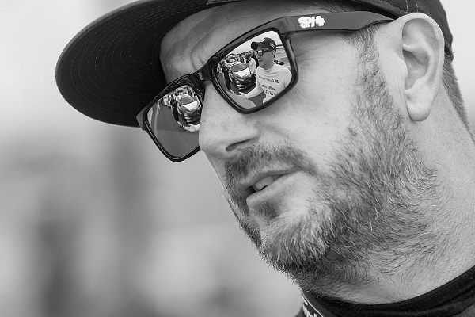

1967 – 2023
“In life—from the simplest thing to the biggest thing—I want to be proud of what it is and stake my claim: ‘That’s mine and that’s how I do it.'”
Kenneth Paul Block was an American professional rally driver with the Hoonigan Racing Division, formerly known as the Monster World Rally Team. Block was also one of the co-founders of DC Shoes. He also competed in many action sports events, including skateboarding, snowboarding, and motocross.